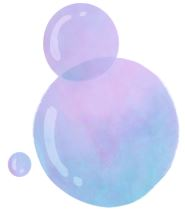

Servicio Profesional de Afilado Industrial
En Grupo Ancor ofrecemos afilado de precisión para herramientas de corte en acero, asegurando un filo duradero y eficaz. Utilizamos maquinaria avanzada y técnicas en frío para preservar las propiedades del acero y maximizar la productividad.
- Afilado de cuchillas, fresas, brocas, sierras y herramientas personalizadas.
- Preservación del ángulo y dureza original del acero.
- Inspección visual, pulido y control de calidad incluidos.
- Servicio con recogida y entrega programada para su comodidad.

Importancia del afilado regular
Mantener las herramientas bien afiladas:
- üîß Aumenta la productividad y la calidad del corte. :contentReference[oaicite:2]{index=2}
- üõ†Ô∏è Reduce costos en reemplazos y tiempo de inactividad. :contentReference[oaicite:3]{index=3}
- ♻️ Es una práctica sostenible en comparación a comprar piezas nuevas. :contentReference[oaicite:4]{index=4}
- ✅ Mejora la seguridad: superficies de corte más estables y controladas. :contentReference[oaicite:5]{index=5}
Cómo realizamos el afilado
Utilizamos máquinas de rectificado industrial con sistemas CNC y ruedas abrasivas de alta precisión:
- Control exacto de ángulos y alimentación (chip load). :contentReference[oaicite:6]{index=6}
- Enfriamiento refrigerado para evitar pérdida de dureza.
- Uso de medios abrasivos de alta calidad para acabado fino.
Herramientas compatibles
Brocas, fresas, mandriles
Sierras circulares y de banda
Cuchillas, cuchillos y herramientas planas


 proyecto@grupoindustrialancor.com
proyecto@grupoindustrialancor.com grupoindustrialancor.com
grupoindustrialancor.com5527841859